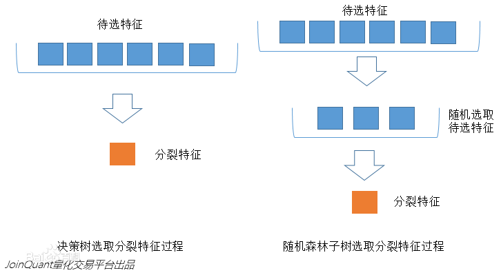
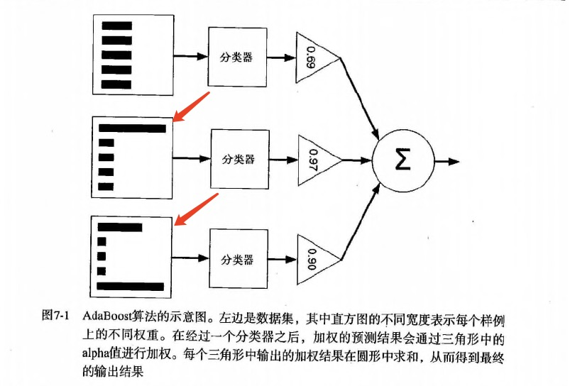
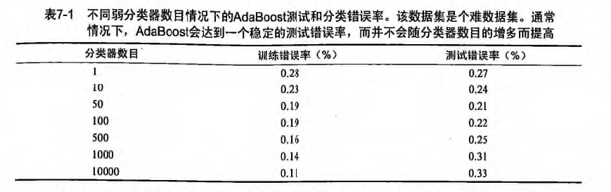
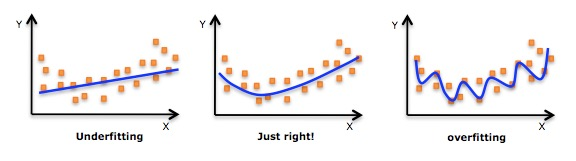
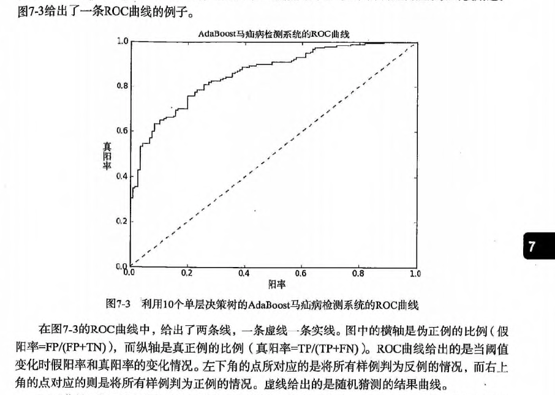
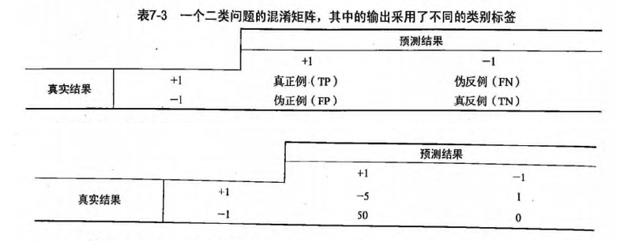

第7章 集成方法 ensemble method¶
集成方法: ensemble method（元算法: meta algorithm） 概述¶
- 概念：是对其他算法进行组合的一种形式。
-
通俗来说： 当做重要决定时，大家可能都会考虑吸取多个专家而不只是一个人的意见。 机器学习处理问题时又何尝不是如此？ 这就是集成方法背后的思想。
-
集成方法：
- 投票选举(bagging: 自举汇聚法 bootstrap aggregating): 是基于数据随机重抽样分类器构造的方法
- 再学习(boosting): 是基于所有分类器的加权求和的方法
集成方法 场景¶
目前 bagging 方法最流行的版本是: 随机森林(random forest)
选男友：美女选择择偶对象的时候，会问几个闺蜜的建议，最后选择一个综合得分最高的一个作为男朋友
目前 boosting 方法最流行的版本是: AdaBoost
追女友：3个帅哥追同一个美女，第1个帅哥失败->(传授经验：姓名、家庭情况) 第2个帅哥失败->(传授经验：兴趣爱好、性格特点) 第3个帅哥成功
bagging 和 boosting 区别是什么？
- bagging 是一种与 boosting 很类似的技术, 所使用的多个分类器的类型（数据量和特征量）都是一致的。
- bagging 是由不同的分类器（1.数据随机化 2.特征随机化）经过训练，综合得出的出现最多分类结果；boosting 是通过调整已有分类器错分的那些数据来获得新的分类器，得出目前最优的结果。
- bagging 中的分类器权重是相等的；而 boosting 中的分类器加权求和，所以权重并不相等，每个权重代表的是其对应分类器在上一轮迭代中的成功度。
随机森林¶
随机森林 概述¶
- 随机森林指的是利用多棵树对样本进行训练并预测的一种分类器。
- 决策树相当于一个大师，通过自己在数据集中学到的知识用于新数据的分类。但是俗话说得好，一个诸葛亮，玩不过三个臭皮匠。随机森林就是希望构建多个臭皮匠，希望最终的分类效果能够超过单个大师的一种算法。
随机森林 原理¶
那随机森林具体如何构建呢？
有两个方面：
1. 数据的随机性化
2. 待选特征的随机化
使得随机森林中的决策树都能够彼此不同，提升系统的多样性，从而提升分类性能。
数据的随机化：使得随机森林中的决策树更普遍化一点，适合更多的场景。
（有放回的准确率在：70% 以上， 无放回的准确率在：60% 以上） 1. 采取有放回的抽样方式 构造子数据集，保证不同子集之间的数量级一样（不同子集／同一子集 之间的元素可以重复） 2. 利用子数据集来构建子决策树，将这个数据放到每个子决策树中，每个子决策树输出一个结果。 3. 然后统计子决策树的投票结果，得到最终的分类 就是 随机森林的输出结果。 4. 如下图，假设随机森林中有3棵子决策树，2棵子树的分类结果是A类，1棵子树的分类结果是B类，那么随机森林的分类结果就是A类。

待选特征的随机化
- 子树从所有的待选特征中随机选取一定的特征。
- 在选取的特征中选取最优的特征。
下图中，蓝色的方块代表所有可以被选择的特征，也就是目前的待选特征；黄色的方块是分裂特征。
左边是一棵决策树的特征选取过程，通过在待选特征中选取最优的分裂特征（别忘了前文提到的ID3算法，C4.5算法，CART算法等等），完成分裂。
右边是一个随机森林中的子树的特征选取过程。

随机森林 开发流程
1 2 3 4 5 6 | 收集数据：任何方法 准备数据：转换样本集 分析数据：任何方法 训练算法：通过数据随机化和特征随机化，进行多实例的分类评估 测试算法：计算错误率 使用算法：输入样本数据，然后运行 随机森林 算法判断输入数据分类属于哪个分类，最后对计算出的分类执行后续处理 |
随机森林 算法特点
1 2 3 | 优点：几乎不需要输入准备、可实现隐式特征选择、训练速度非常快、其他模型很难超越、很难建立一个糟糕的随机森林模型、大量优秀、免费以及开源的实现。 缺点：劣势在于模型大小、是个很难去解释的黑盒子。 适用数据范围：数值型和标称型 |
项目案例: 声纳信号分类¶
项目概述¶
这是 Gorman 和 Sejnowski 在研究使用神经网络的声纳信号分类中使用的数据集。任务是训练一个模型来区分声纳信号。
开发流程¶
1 2 3 4 5 6 | 收集数据：提供的文本文件 准备数据：转换样本集 分析数据：手工检查数据 训练算法：在数据上，利用 random_forest() 函数进行优化评估，返回模型的综合分类结果 测试算法：在采用自定义 n_folds 份随机重抽样 进行测试评估，得出综合的预测评分 使用算法：若你感兴趣可以构建完整的应用程序，从案例进行封装，也可以参考我们的代码 |
收集数据：提供的文本文件
样本数据：sonar-all-data.txt
1 2 3 | 0.02,0.0371,0.0428,0.0207,0.0954,0.0986,0.1539,0.1601,0.3109,0.2111,0.1609,0.1582,0.2238,0.0645,0.066,0.2273,0.31,0.2999,0.5078,0.4797,0.5783,0.5071,0.4328,0.555,0.6711,0.6415,0.7104,0.808,0.6791,0.3857,0.1307,0.2604,0.5121,0.7547,0.8537,0.8507,0.6692,0.6097,0.4943,0.2744,0.051,0.2834,0.2825,0.4256,0.2641,0.1386,0.1051,0.1343,0.0383,0.0324,0.0232,0.0027,0.0065,0.0159,0.0072,0.0167,0.018,0.0084,0.009,0.0032,R 0.0453,0.0523,0.0843,0.0689,0.1183,0.2583,0.2156,0.3481,0.3337,0.2872,0.4918,0.6552,0.6919,0.7797,0.7464,0.9444,1,0.8874,0.8024,0.7818,0.5212,0.4052,0.3957,0.3914,0.325,0.32,0.3271,0.2767,0.4423,0.2028,0.3788,0.2947,0.1984,0.2341,0.1306,0.4182,0.3835,0.1057,0.184,0.197,0.1674,0.0583,0.1401,0.1628,0.0621,0.0203,0.053,0.0742,0.0409,0.0061,0.0125,0.0084,0.0089,0.0048,0.0094,0.0191,0.014,0.0049,0.0052,0.0044,R 0.0262,0.0582,0.1099,0.1083,0.0974,0.228,0.2431,0.3771,0.5598,0.6194,0.6333,0.706,0.5544,0.532,0.6479,0.6931,0.6759,0.7551,0.8929,0.8619,0.7974,0.6737,0.4293,0.3648,0.5331,0.2413,0.507,0.8533,0.6036,0.8514,0.8512,0.5045,0.1862,0.2709,0.4232,0.3043,0.6116,0.6756,0.5375,0.4719,0.4647,0.2587,0.2129,0.2222,0.2111,0.0176,0.1348,0.0744,0.013,0.0106,0.0033,0.0232,0.0166,0.0095,0.018,0.0244,0.0316,0.0164,0.0095,0.0078,R |
准备数据：转换样本集
1 2 3 4 5 6 7 8 9 10 11 12 13 14 15 16 17 18 19 | # 导入csv文件 def loadDataSet(filename): dataset = [] with open(filename, 'r') as fr: for line in fr.readlines(): if not line: continue lineArr = [] for featrue in line.split(','): # strip()返回移除字符串头尾指定的字符生成的新字符串 str_f = featrue.strip() if str_f.isdigit(): # 判断是否是数字 # 将数据集的第column列转换成float形式 lineArr.append(float(str_f)) else: # 添加分类标签 lineArr.append(str_f) dataset.append(lineArr) return dataset |
分析数据：手工检查数据
训练算法：在数据上，利用 random_forest() 函数进行优化评估，返回模型的综合分类结果
- 样本数据随机无放回抽样-用于交叉验证
1 2 3 4 5 6 7 8 9 10 11 12 13 14 15 16 17 18 19 20 21 22 23 24 | def cross_validation_split(dataset, n_folds): """cross_validation_split(将数据集进行抽重抽样 n_folds 份，数据可以重复重复抽取) Args: dataset 原始数据集 n_folds 数据集dataset分成n_flods份 Returns: dataset_split list集合，存放的是：将数据集进行抽重抽样 n_folds 份，数据可以重复重复抽取 """ dataset_split = list() dataset_copy = list(dataset) # 复制一份 dataset,防止 dataset 的内容改变 fold_size = len(dataset) / n_folds for i in range(n_folds): fold = list() # 每次循环 fold 清零，防止重复导入 dataset_split while len(fold) < fold_size: # 这里不能用 if，if 只是在第一次判断时起作用，while 执行循环，直到条件不成立 # 有放回的随机采样，有一些样本被重复采样，从而在训练集中多次出现，有的则从未在训练集中出现，此则自助采样法。从而保证每棵决策树训练集的差异性 index = randrange(len(dataset_copy)) # 将对应索引 index 的内容从 dataset_copy 中导出，并将该内容从 dataset_copy 中删除。 # pop() 函数用于移除列表中的一个元素（默认最后一个元素），并且返回该元素的值。 fold.append(dataset_copy.pop(index)) # 无放回的方式 # fold.append(dataset_copy[index]) # 有放回的方式 dataset_split.append(fold) # 由dataset分割出的n_folds个数据构成的列表，为了用于交叉验证 return dataset_split |
- 训练数据集随机化
1 2 3 4 5 6 7 8 9 10 11 12 13 14 15 16 17 18 19 20 | # Create a random subsample from the dataset with replacement def subsample(dataset, ratio): # 创建数据集的随机子样本 """random_forest(评估算法性能，返回模型得分) Args: dataset 训练数据集 ratio 训练数据集的样本比例 Returns: sample 随机抽样的训练样本 """ sample = list() # 训练样本的按比例抽样。 # round() 方法返回浮点数x的四舍五入值。 n_sample = round(len(dataset) * ratio) while len(sample) < n_sample: # 有放回的随机采样，有一些样本被重复采样，从而在训练集中多次出现，有的则从未在训练集中出现，此则自助采样法。从而保证每棵决策树训练集的差异性 index = randrange(len(dataset)) sample.append(dataset[index]) return sample |
- 特征随机化
1 2 3 4 5 6 7 8 9 10 11 12 13 14 15 16 17 18 | # 找出分割数据集的最优特征，得到最优的特征 index，特征值 row[index]，以及分割完的数据 groups（left, right） def get_split(dataset, n_features): class_values = list(set(row[-1] for row in dataset)) # class_values =[0, 1] b_index, b_value, b_score, b_groups = 999, 999, 999, None features = list() while len(features) < n_features: index = randrange(len(dataset[0])-1) # 往 features 添加 n_features 个特征（ n_feature 等于特征数的根号），特征索引从 dataset 中随机取 if index not in features: features.append(index) for index in features: # 在 n_features 个特征中选出最优的特征索引，并没有遍历所有特征，从而保证了每课决策树的差异性 for row in dataset: groups = test_split(index, row[index], dataset) # groups=(left, right), row[index] 遍历每一行 index 索引下的特征值作为分类值 value, 找出最优的分类特征和特征值 gini = gini_index(groups, class_values) # 左右两边的数量越一样，说明数据区分度不高，gini系数越大 if gini < b_score: b_index, b_value, b_score, b_groups = index, row[index], gini, groups # 最后得到最优的分类特征 b_index,分类特征值 b_value,分类结果 b_groups。b_value 为分错的代价成本 # print b_score return {'index': b_index, 'value': b_value, 'groups': b_groups} |
- 随机森林
1 2 3 4 5 6 7 8 9 10 11 12 13 14 15 16 17 18 19 20 21 22 23 24 25 26 27 28 | # Random Forest Algorithm def random_forest(train, test, max_depth, min_size, sample_size, n_trees, n_features): """random_forest(评估算法性能，返回模型得分) Args: train 训练数据集 test 测试数据集 max_depth 决策树深度不能太深，不然容易导致过拟合 min_size 叶子节点的大小 sample_size 训练数据集的样本比例 n_trees 决策树的个数 n_features 选取的特征的个数 Returns: predictions 每一行的预测结果，bagging 预测最后的分类结果 """ trees = list() # n_trees 表示决策树的数量 for i in range(n_trees): # 随机抽样的训练样本， 随机采样保证了每棵决策树训练集的差异性 sample = subsample(train, sample_size) # 创建一个决策树 tree = build_tree(sample, max_depth, min_size, n_features) trees.append(tree) # 每一行的预测结果，bagging 预测最后的分类结果 predictions = [bagging_predict(trees, row) for row in test] return predictions |
测试算法：在采用自定义 n_folds 份随机重抽样 进行测试评估，得出综合的预测评分。
- 计算随机森林的预测结果的正确率
1 2 3 4 5 6 7 8 9 10 11 12 13 14 15 16 17 18 19 20 21 22 23 24 25 26 27 28 29 30 31 32 33 34 35 36 37 38 39 40 41 42 43 44 45 46 | # 评估算法性能，返回模型得分 def evaluate_algorithm(dataset, algorithm, n_folds, *args): """evaluate_algorithm(评估算法性能，返回模型得分) Args: dataset 原始数据集 algorithm 使用的算法 n_folds 数据的份数 *args 其他的参数 Returns: scores 模型得分 """ # 将数据集进行随机抽样，分成 n_folds 份，数据无重复的抽取 folds = cross_validation_split(dataset, n_folds) scores = list() # 每次循环从 folds 从取出一个 fold 作为测试集，其余作为训练集，遍历整个 folds ，实现交叉验证 for fold in folds: train_set = list(folds) train_set.remove(fold) # 将多个 fold 列表组合成一个 train_set 列表, 类似 union all """ In [20]: l1=[[1, 2, 'a'], [11, 22, 'b']] In [21]: l2=[[3, 4, 'c'], [33, 44, 'd']] In [22]: l=[] In [23]: l.append(l1) In [24]: l.append(l2) In [25]: l Out[25]: [[[1, 2, 'a'], [11, 22, 'b']], [[3, 4, 'c'], [33, 44, 'd']]] In [26]: sum(l, []) Out[26]: [[1, 2, 'a'], [11, 22, 'b'], [3, 4, 'c'], [33, 44, 'd']] """ train_set = sum(train_set, []) test_set = list() # fold 表示从原始数据集 dataset 提取出来的测试集 for row in fold: row_copy = list(row) row_copy[-1] = None test_set.append(row_copy) predicted = algorithm(train_set, test_set, *args) actual = [row[-1] for row in fold] # 计算随机森林的预测结果的正确率 accuracy = accuracy_metric(actual, predicted) scores.append(accuracy) return scores |
使用算法：若你感兴趣可以构建完整的应用程序，从案例进行封装，也可以参考我们的代码
完整代码地址: https://github.com/apachecn/MachineLearning/blob/master/src/python/7.RandomForest/randomForest.py
AdaBoost¶
AdaBoost (adaptive boosting: 自适应 boosting) 概述¶
能否使用弱分类器和多个实例来构建一个强分类器？ 这是一个非常有趣的理论问题。
AdaBoost 原理¶
AdaBoost 工作原理

AdaBoost 开发流程
1 2 3 4 5 6 7 8 | 收集数据：可以使用任意方法
准备数据：依赖于所使用的弱分类器类型，本章使用的是单层决策树，这种分类器可以处理任何数据类型。
当然也可以使用任意分类器作为弱分类器，第2章到第6章中的任一分类器都可以充当弱分类器。
作为弱分类器，简单分类器的效果更好。
分析数据：可以使用任意方法。
训练算法：AdaBoost 的大部分时间都用在训练上，分类器将多次在同一数据集上训练弱分类器。
测试算法：计算分类的错误率。
使用算法：通SVM一样，AdaBoost 预测两个类别中的一个。如果想把它应用到多个类别的场景，那么就要像多类 SVM 中的做法一样对 AdaBoost 进行修改。
|
AdaBoost 算法特点
1 2 3 | * 优点：泛化（由具体的、个别的扩大为一般的）错误率低，易编码，可以应用在大部分分类器上，无参数调节。 * 缺点：对离群点敏感。 * 适用数据类型：数值型和标称型数据。 |
项目案例: 马疝病的预测¶
项目流程图

基于单层决策树构建弱分类器 * 单层决策树(decision stump, 也称决策树桩)是一种简单的决策树。
项目概述¶
预测患有疝气病的马的存活问题，这里的数据包括368个样本和28个特征，疝气病是描述马胃肠痛的术语，然而，这种病并不一定源自马的胃肠问题，其他问题也可能引发疝气病，该数据集中包含了医院检测马疝气病的一些指标，有的指标比较主观，有的指标难以测量，例如马的疼痛级别。另外，除了部分指标主观和难以测量之外，该数据还存在一个问题，数据集中有30%的值是缺失的。
开发流程¶
1 2 3 4 5 6 | 收集数据：提供的文本文件 准备数据：确保类别标签是+1和-1，而非1和0 分析数据：统计分析 训练算法：在数据上，利用 adaBoostTrainDS() 函数训练出一系列的分类器 测试算法：我们拥有两个数据集。在不采用随机抽样的方法下，我们就会对 AdaBoost 和 Logistic 回归的结果进行完全对等的比较 使用算法：观察该例子上的错误率。不过，也可以构建一个 Web 网站，让驯马师输入马的症状然后预测马是否会死去 |
收集数据：提供的文本文件
训练数据：horseColicTraining.txt
测试数据：horseColicTest.txt
1 2 3 | 2.000000 1.000000 38.500000 66.000000 28.000000 3.000000 3.000000 0.000000 2.000000 5.000000 4.000000 4.000000 0.000000 0.000000 0.000000 3.000000 5.000000 45.000000 8.400000 0.000000 0.000000 -1.000000 1.000000 1.000000 39.200000 88.000000 20.000000 0.000000 0.000000 4.000000 1.000000 3.000000 4.000000 2.000000 0.000000 0.000000 0.000000 4.000000 2.000000 50.000000 85.000000 2.000000 2.000000 -1.000000 2.000000 1.000000 38.300000 40.000000 24.000000 1.000000 1.000000 3.000000 1.000000 3.000000 3.000000 1.000000 0.000000 0.000000 0.000000 1.000000 1.000000 33.000000 6.700000 0.000000 0.000000 1.000000 |
准备数据：确保类别标签是+1和-1，而非1和0
1 2 3 4 5 6 7 8 9 10 11 12 13 14 | def loadDataSet(fileName): # 获取 feature 的数量, 便于获取 numFeat = len(open(fileName).readline().split('\t')) dataArr = [] labelArr = [] fr = open(fileName) for line in fr.readlines(): lineArr = [] curLine = line.strip().split('\t') for i in range(numFeat-1): lineArr.append(float(curLine[i])) dataArr.append(lineArr) labelArr.append(float(curLine[-1])) return dataArr, labelArr |
分析数据：统计分析
过拟合(overfitting, 也称为过学习) * 发现测试错误率在达到一个最小值之后有开始上升，这种现象称为过拟合。

- 通俗来说：就是把一些噪音数据也拟合进去的，如下图。

训练算法：在数据上，利用 adaBoostTrainDS() 函数训练出一系列的分类器
1 2 3 4 5 6 7 8 9 10 11 12 13 14 15 16 17 18 19 20 21 22 23 24 25 26 27 28 29 30 31 32 33 34 35 36 37 38 39 40 41 42 43 44 45 46 47 48 | def adaBoostTrainDS(dataArr, labelArr, numIt=40): """adaBoostTrainDS(adaBoost训练过程放大) Args: dataArr 特征标签集合 labelArr 分类标签集合 numIt 实例数 Returns: weakClassArr 弱分类器的集合 aggClassEst 预测的分类结果值 """ weakClassArr = [] m = shape(dataArr)[0] # 初始化 D，设置每个样本的权重值，平均分为m份 D = mat(ones((m, 1))/m) aggClassEst = mat(zeros((m, 1))) for i in range(numIt): # 得到决策树的模型 bestStump, error, classEst = buildStump(dataArr, labelArr, D) # alpha目的主要是计算每一个分类器实例的权重(组合就是分类结果) # 计算每个分类器的alpha权重值 alpha = float(0.5*log((1.0-error)/max(error, 1e-16))) bestStump['alpha'] = alpha # store Stump Params in Array weakClassArr.append(bestStump) print "alpha=%s, classEst=%s, bestStump=%s, error=%s " % (alpha, classEst.T, bestStump, error) # 分类正确：乘积为1，不会影响结果，-1主要是下面求e的-alpha次方 # 分类错误：乘积为 -1，结果会受影响，所以也乘以 -1 expon = multiply(-1*alpha*mat(labelArr).T, classEst) print '(-1取反)预测值expon=', expon.T # 计算e的expon次方，然后计算得到一个综合的概率的值 # 结果发现： 判断错误的样本，D对于的样本权重值会变大。 D = multiply(D, exp(expon)) D = D/D.sum() # 预测的分类结果值，在上一轮结果的基础上，进行加和操作 print '当前的分类结果：', alpha*classEst.T aggClassEst += alpha*classEst print "叠加后的分类结果aggClassEst: ", aggClassEst.T # sign 判断正为1， 0为0， 负为-1，通过最终加和的权重值，判断符号。 # 结果为：错误的样本标签集合，因为是 !=,那么结果就是0 正, 1 负 aggErrors = multiply(sign(aggClassEst) != mat(labelArr).T, ones((m, 1))) errorRate = aggErrors.sum()/m # print "total error=%s " % (errorRate) if errorRate == 0.0: break return weakClassArr, aggClassEst |
1 2 3 4 5 | 发现： alpha （模型权重）目的主要是计算每一个分类器实例的权重(加和就是分类结果) 分类的权重值：最大的值= alpha 的加和，最小值=-最大值 D （样本权重）的目的是为了计算错误概率： weightedError = D.T*errArr，求最佳分类器 样本的权重值：如果一个值误判的几率越小，那么 D 的样本权重越小 |

测试算法：我们拥有两个数据集。在不采用随机抽样的方法下，我们就会对 AdaBoost 和 Logistic 回归的结果进行完全对等的比较。
1 2 3 4 5 6 7 8 9 10 11 12 13 14 15 16 17 18 19 20 | def adaClassify(datToClass, classifierArr): """adaClassify(ada分类测试) Args: datToClass 多个待分类的样例 classifierArr 弱分类器的集合 Returns: sign(aggClassEst) 分类结果 """ # do stuff similar to last aggClassEst in adaBoostTrainDS dataMat = mat(datToClass) m = shape(dataMat)[0] aggClassEst = mat(zeros((m, 1))) # 循环 多个分类器 for i in range(len(classifierArr)): # 前提： 我们已经知道了最佳的分类器的实例 # 通过分类器来核算每一次的分类结果，然后通过alpha*每一次的结果 得到最后的权重加和的值。 classEst = stumpClassify(dataMat, classifierArr[i]['dim'], classifierArr[i]['thresh'], classifierArr[i]['ineq']) aggClassEst += classifierArr[i]['alpha']*classEst return sign(aggClassEst) |
使用算法：观察该例子上的错误率。不过，也可以构建一个 Web 网站，让驯马师输入马的症状然后预测马是否会死去。
1 2 3 4 5 6 7 8 9 10 11 12 13 14 | # 马疝病数据集 # 训练集合 dataArr, labelArr = loadDataSet("input/7.AdaBoost/horseColicTraining2.txt") weakClassArr, aggClassEst = adaBoostTrainDS(dataArr, labelArr, 40) print weakClassArr, '\n-----\n', aggClassEst.T # 计算ROC下面的AUC的面积大小 plotROC(aggClassEst.T, labelArr) # 测试集合 dataArrTest, labelArrTest = loadDataSet("input/7.AdaBoost/horseColicTest2.txt") m = shape(dataArrTest)[0] predicting10 = adaClassify(dataArrTest, weakClassArr) errArr = mat(ones((m, 1))) # 测试：计算总样本数，错误样本数，错误率 print m, errArr[predicting10 != mat(labelArrTest).T].sum(), errArr[predicting10 != mat(labelArrTest).T].sum()/m |
完整代码地址: https://github.com/apachecn/MachineLearning/blob/master/src/python/7.AdaBoost/adaboost.py
要点补充¶
非均衡现象：
在分类器训练时，正例数目和反例数目不相等（相差很大）
- 判断马是否能继续生存(不可误杀)
- 过滤垃圾邮件(不可漏判)
- 不能放过传染病的人
- 不能随便认为别人犯罪
ROC 评估方法
- ROC 曲线: 最佳的分类器应该尽可能地处于左上角

- 对不同的 ROC 曲线进行比较的一个指标是曲线下的面积(Area Unser the Curve, AUC).
- AUC 给出的是分类器的平均性能值，当然它并不能完全代替对整条曲线的观察。
- 一个完美分类器的 AUC 为1，而随机猜测的 AUC 则为0.5。
代价函数
- 基于代价函数的分类器决策控制：
TP*(-5)+FN*1+FP*50+TN*0

抽样
- 欠抽样(undersampling)或者过抽样(oversampling)
- 欠抽样: 意味着删除样例
- 过抽样: 意味着复制样例(重复使用)
- 作者：片刻
- GitHub地址: https://github.com/apachecn/MachineLearning
- 版权声明：欢迎转载学习 => 请标注信息来源于 ApacheCN